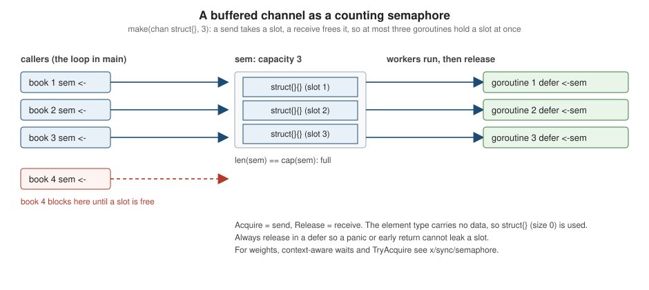

Concurrency Patterns
|
This content was generated with the assistance of AI and should be verified against the official documentation before being relied on in production. |
This page is written against Go 1.27 (go1.27.2), checked on 2026-10-18; every go.mod shown has the line go 1.27.
Goroutines and channels are the building blocks (see Goroutines and the Scheduler and
Channels and Select); this page shows the recurring shapes that
people assemble from them: a generator that produces values, a pipeline of stages, fan-out to several workers and fan-in
of their results, a bounded number of concurrent tasks, a worker pool, and the cross-cutting concerns that every such
program needs: cancellation, backpressure, error propagation, rate limiting, timeouts and liveness.
Cancellation is explained in depth in Context, and the lower-level
primitives in Sync and Atomics and
Memory Model and Data Races; here they appear in context.
For the same ideas in other languages on this site see
Rust threads and message passing.
Only the standard library is used. The two golang.org/x packages that people reach for (errgroup and semaphore) are
outside the standard library and are not downloaded in the examples; they are described from their documentation, in
sections that say so, and a small standard-library re-implementation of errgroup is run for real to show the mechanics.
Every other example was compiled, vetted with go vet, formatted with gofmt and run with Go 1.27.2 (also under
go run -race, where concurrent); the output shown is the real output. Results that would otherwise depend on goroutine
scheduling are sorted or reduced to a boolean so that the output is the same on every run. The go.mod of the example
module is:
module example.com/shelf
go 1.27When to use these patterns
Concurrency in Go is cheap to start and easy to get subtly wrong, so the first question is whether to use it at all. Use it when the work is naturally independent and waits on something (network, disk, a lock-free CPU-bound split of a large input), and when the result is worth the added reasoning about ordering, cancellation and failure. A function that returns a slice is easier to call, test and compose than one that returns a channel; a common guideline is to keep concurrency inside an implementation and expose a plain synchronous API, letting the caller decide whether to call it from a goroutine. Bodner (chapter 10) and the official talk Go Concurrency Patterns make the same point.
The rules that make every pattern below safe are few:
-
Whoever sends, closes. Only the goroutine that owns the sending side closes a channel; receivers never close it, and with several senders a separate goroutine closes after all of them finish (see fan-in).
-
Every goroutine must have a way to stop. A goroutine blocked forever on a channel is a leak (below). Pass a done channel or a
context.Contextand select on it wherever the goroutine could block. -
Return receive-only channels (
<-chan T) from producers, so the consumer cannot close or send. -
Share by communicating, or lock: but not both for the same data (see the last section).
Generators
A generator is a function that returns a channel and starts a goroutine that sends on it. The channel is the
iterator. The producer owns the channel: it closes it when it runs out of values, which ends the consumer’s range
loop. Selecting on a done channel on every send is what lets a consumer stop early without leaking the producer.
package main
import "fmt"
// titles is a generator: it returns a receive-only channel and owns the
// goroutine that sends on it, so it is also the one that closes the channel.
func titles(done <-chan struct{}, in ...string) <-chan string {
out := make(chan string)
go func() {
defer close(out)
for _, t := range in {
select {
case out <- t:
case <-done:
return
}
}
}()
return out
}
func main() {
done := make(chan struct{})
defer close(done)
for t := range titles(done, "Dune", "Emma", "Ulysses") {
fmt.Println(t)
}
}Dune
Emma
UlyssesSince Go 1.23 a function can also be an iterator (iter.Seq), consumed by range without any goroutine or channel;
for a sequential producer that is cheaper and cannot leak, and a channel-based generator is only warranted when the
producer genuinely runs concurrently with the consumer. See Iterators and Range-over-Func.
Pipelines
A pipeline is a series of stages connected by channels. Each stage receives from an inbound channel, does some work and sends on an outbound channel; the first stage is a generator and the last is consumed by the caller. Stages run concurrently, so while one book is being parsed the previous one is already being filtered. Because every stage has the same shape, one generic helper expresses all of them:
package main
import (
"fmt"
"strings"
)
func gen(done <-chan struct{}, in ...string) <-chan string {
out := make(chan string)
go func() {
defer close(out)
for _, s := range in {
select {
case out <- s:
case <-done:
return
}
}
}()
return out
}
// stage turns a function into a pipeline stage: receive, transform, send.
func stage[In, Out any](done <-chan struct{}, in <-chan In, f func(In) (Out, bool)) <-chan Out {
out := make(chan Out)
go func() {
defer close(out)
for v := range in {
r, ok := f(v)
if !ok {
continue
}
select {
case out <- r:
case <-done:
return
}
}
}()
return out
}
func main() {
done := make(chan struct{})
defer close(done)
raw := gen(done, " dune ", "", "EMMA", " ulysses")
clean := stage(done, raw, func(s string) (string, bool) {
s = strings.TrimSpace(strings.ToLower(s))
return s, s != ""
})
lengths := stage(done, clean, func(s string) (string, bool) {
return fmt.Sprintf("%s=%d", s, len(s)), true
})
for r := range lengths {
fmt.Println(r)
}
}dune=4
emma=4
ulysses=7The properties to check in any stage are: it closes its outbound channel when its input ends (defer close(out)), it
keeps receiving until the inbound channel is closed, and every send is paired with the done case. The ownership rule
above is what makes the whole chain shut down in order: closing the generator’s channel makes each stage’s range
finish and close its own output in turn.
Fan-out and fan-in
When one stage is the bottleneck, start several copies of it that all read from the same inbound channel: that is
fan-out. The channel hands each value to exactly one receiver, so no extra coordination is needed. Fan-in merges
their outputs into one channel: a goroutine per input forwards values, a sync.WaitGroup counts them, and one extra
goroutine closes the merged channel once all forwarders finish. This is the one case where "the sender closes" needs a
helper, because there are several senders.
(generator)"] --> q{{"isbns channel"}} q --> w1["worker 1
validate and enrich"] q --> w2["worker 2
validate and enrich"] q --> w3["worker 3
validate and enrich"] w1 --> m{{"merge
WaitGroup then close"}} w2 --> m w3 --> m m --> st["Store.Add
(single consumer)"] done(["done / ctx.Done()"]) -.-> imp done -.-> w1 done -.-> w2 done -.-> w3 done -.-> m
package main
import (
"fmt"
"slices"
"strings"
"sync"
)
func gen(done <-chan struct{}, in ...string) <-chan string {
out := make(chan string)
go func() {
defer close(out)
for _, s := range in {
select {
case out <- s:
case <-done:
return
}
}
}()
return out
}
func upper(done <-chan struct{}, in <-chan string) <-chan string {
out := make(chan string)
go func() {
defer close(out)
for s := range in {
select {
case out <- strings.ToUpper(s):
case <-done:
return
}
}
}()
return out
}
// merge fans several channels in to one. The last worker to finish closes out.
func merge[T any](done <-chan struct{}, cs ...<-chan T) <-chan T {
var wg sync.WaitGroup
out := make(chan T)
for _, c := range cs {
wg.Go(func() {
for v := range c {
select {
case out <- v:
case <-done:
return
}
}
})
}
go func() {
wg.Wait()
close(out)
}()
return out
}
func main() {
done := make(chan struct{})
defer close(done)
src := gen(done, "dune", "emma", "ulysses", "persuasion", "kim", "ivanhoe")
// fan-out: three stages read the same channel
workers := []<-chan string{upper(done, src), upper(done, src), upper(done, src)}
var got []string
for s := range merge(done, workers...) { // fan-in
got = append(got, s)
}
slices.Sort(got) // arrival order is not deterministic
fmt.Println(got)
}[DUNE EMMA IVANHOE KIM PERSUASION ULYSSES]Points to note:
-
Order is lost. Several workers finish in any order, so fan-out is only valid when results are independent. The example sorts before printing; real code either tags each result with its input index and re-orders, or writes into a pre-sized slice at that index (the form used by errgroup below).
-
wg.Go(f)(Go 1.25) replaces thewg.Add(1)andgo func() { defer wg.Done() … }()pair. It cannot be misordered, and thego vetwaitgroupanalyzer (also Go 1.25) reports the classic mistake of callingAddinside the goroutine (see below). The function passed toGomust not panic. -
The closer goroutine is a separate goroutine because
wg.Wait()blocks; closing in the caller would deadlock the consumer that is waiting to receive.
Bounded parallelism and semaphores
Starting a goroutine per input is fine for ten items and a disaster for ten million, or whenever each goroutine holds a scarce resource (a database connection, a file descriptor, a remote rate quota). Bounded parallelism caps how many run at once. Two shapes cover most needs.
A buffered channel as a semaphore
A buffered channel of capacity n is a counting semaphore: sending takes a slot and blocks when all n are taken,
receiving frees one. The element type carries no information, so struct{} (size zero) is used.

package main
import (
"fmt"
"sync"
"sync/atomic"
"time"
)
func main() {
const limit = 3
sem := make(chan struct{}, limit) // capacity = max concurrent holders
var inFlight, peak atomic.Int32
var wg sync.WaitGroup
for i := range 10 {
sem <- struct{}{} // acquire: blocks while limit holders exist
wg.Go(func() {
defer func() { <-sem }() // release
n := inFlight.Add(1)
for {
p := peak.Load()
if n <= p || peak.CompareAndSwap(p, n) {
break
}
}
time.Sleep(5 * time.Millisecond) // pretend to fetch book i
inFlight.Add(-1)
_ = i
})
}
wg.Wait()
fmt.Println("never more than", limit, "at once:", peak.Load() <= limit)
}never more than 3 at once: trueSource: Go wiki: Bounding resource use and Channel types.
The acquire happens in the loop, before wg.Go, which has two effects: the loop itself is throttled (no unbounded
pile of waiting goroutines), and the number of live goroutines never exceeds the limit plus one. If the acquire were
inside the goroutine, all ten would be created at once and only their work would be limited, which protects the
resource but not memory. The release is deferred so that an early return cannot leak a slot.
A fixed pool of workers
The alternative is to start exactly n long-lived workers that pull from a shared jobs channel. The bound is structural rather than counted, and per-worker state (a buffer, a connection) can be reused across jobs.
package main
import (
"fmt"
"slices"
"sync"
)
type job struct {
id int
isbn string
}
type result struct {
id int
valid bool
}
// checkDigit is a cheap stand-in for real work (ISBN-13 checksum).
func valid13(s string) bool {
if len(s) != 13 {
return false
}
sum := 0
for i, r := range s {
d := int(r - '0')
if d < 0 || d > 9 {
return false
}
if i%2 == 1 {
d *= 3
}
sum += d
}
return sum%10 == 0
}
func main() {
isbns := []string{"9780140328721", "9780140328722", "9780261103573", "123", "9780451524935"}
jobs := make(chan job)
results := make(chan result)
var wg sync.WaitGroup
for range 3 { // fixed pool of three workers
wg.Go(func() {
for j := range jobs {
results <- result{j.id, valid13(j.isbn)}
}
})
}
go func() { // producer owns jobs
defer close(jobs)
for i, s := range isbns {
jobs <- job{i, s}
}
}()
go func() { // closer owns results
wg.Wait()
close(results)
}()
var all []result
for r := range results {
all = append(all, r)
}
slices.SortFunc(all, func(a, b result) int { return a.id - b.id })
for _, r := range all {
fmt.Printf("%d %-13s valid=%t\n", r.id, isbns[r.id], r.valid)
}
}0 9780140328721 valid=true
1 9780140328722 valid=false
2 9780261103573 valid=true
3 123 valid=false
4 9780451524935 valid=trueThree goroutines own three channels: the producer closes jobs, the closer closes results after the workers
finish, and the caller drains results. Unbuffered channels give natural backpressure, and results are re-ordered by
id because the workers finish in any order.
Semaphores from golang.org/x/sync
golang.org/x/sync/semaphore (pinned documentation:
x/sync v0.24.0) provides a weighted semaphore. It is not part of the standard library, so the
following is described from the package documentation and is not run here. The API is semaphore.NewWeighted(n int64)
and the methods Acquire(ctx context.Context, n int64) error, TryAcquire(n int64) bool and Release(n int64).
It is preferable to a channel when tasks have different costs (for example, a large book import takes 4 units and a
lookup takes 1), when the wait must be abandoned on context cancellation (Acquire returns ctx.Err()), or when a
non-blocking attempt is wanted. Releasing more than was acquired panics.
sem := semaphore.NewWeighted(8) // total budget: 8 units
if err := sem.Acquire(ctx, 4); err != nil { // blocks, honours ctx
return err
}
defer sem.Release(4)Source: golang.org/x/sync/semaphore (fragment, not compiled).
Cancellation
Every pattern above blocks on channel operations, so every one needs a way to be told to stop. There are two mechanisms and they differ in how much information they carry.
Done channel. A chan struct{} that is closed to signal "stop". Closing broadcasts to every goroutine selecting on
it, which a send could not do. It is the primitive from the pipelines article and is enough inside one package.
Context. context.Context generalises the done channel: ctx.Done() is the same kind of channel, and a context
adds a reason (ctx.Err(), and context.Cause since Go 1.20), deadlines, a tree of parent and child contexts that
cancel together, and a standard first-parameter convention that crosses package boundaries (net/http, database/sql
and os/exec all accept one). Prefer a context in any exported API. The details, including WithTimeout,
WithDeadline, AfterFunc and WithoutCancel (both Go 1.21), are in Context.
Goroutine leaks
A leak is a goroutine that can never proceed: it is blocked on a channel that nobody will ever send to, receive from
or close. The runtime never reclaims it, and it keeps everything it references alive. The cause is nearly always a
consumer that stops reading (an error, a timeout, a return out of a range) while the producer is still sending.
The example counts goroutines with runtime.NumGoroutine to show the difference between a producer that has no
escape route and one that selects on done:
package main
import (
"fmt"
"runtime"
"sync"
)
// leaky starts a goroutine that blocks forever when the caller stops reading.
func leaky(n int) <-chan int {
out := make(chan int)
go func() {
defer close(out)
for i := range n {
out <- i // blocks forever if nobody receives
}
}()
return out
}
// safe takes a done channel so the caller can always release the goroutine.
func safe(done <-chan struct{}, n int, exited *sync.WaitGroup) <-chan int {
out := make(chan int)
exited.Go(func() {
defer close(out)
for i := range n {
select {
case out <- i:
case <-done:
return
}
}
})
return out
}
func main() {
base := runtime.NumGoroutine()
c := leaky(100)
fmt.Println("first value:", <-c) // read one, abandon the rest
for runtime.NumGoroutine() < base+1 {
runtime.Gosched()
}
fmt.Println("leaked goroutines:", runtime.NumGoroutine()-base)
var exited sync.WaitGroup
done := make(chan struct{})
s := safe(done, 100, &exited)
fmt.Println("first value:", <-s)
close(done) // cancel
exited.Wait()
fmt.Println("safe producer exited")
}first value: 0
leaked goroutines: 1
first value: 0
safe producer exitedLeaks are usually found in production rather than in tests, by watching the goroutine count or a goroutine profile
(net/http/pprof, runtime/pprof); Go 1.27 makes a goroutine leak profile generally available for exactly this, covered with the other
diagnostics in Profiling, Tracing and Diagnostics. In tests, the
testing/synctest package (Go 1.25) runs code in a bubble whose fake clock and goroutine accounting make leaks and timers deterministic, see
Benchmarks, Fuzzing and synctest.
Cancelling with a cause
context.WithCancelCause (Go 1.20) returns a CancelCauseFunc that records why the context was cancelled. ctx.Err()
still reports the generic context.Canceled, while context.Cause(ctx) returns the recorded error. Only the first
call to the cancel function sets the cause. The example stops a producer as soon as a shared budget is spent:
package main
import (
"context"
"errors"
"fmt"
"sync"
)
func gen(ctx context.Context, n int) <-chan int {
out := make(chan int)
go func() {
defer close(out)
for i := range n {
select {
case out <- i:
case <-ctx.Done():
return
}
}
}()
return out
}
var errBudget = errors.New("loan budget exhausted")
func main() {
ctx, cancel := context.WithCancelCause(context.Background())
defer cancel(nil)
var wg sync.WaitGroup
var mu sync.Mutex
seen := 0
src := gen(ctx, 1000)
for range 4 {
wg.Go(func() {
for range src {
mu.Lock()
seen++
if seen == 5 {
cancel(errBudget) // first caller wins; later calls are ignored
}
mu.Unlock()
if ctx.Err() != nil {
return
}
}
})
}
wg.Wait()
fmt.Println("ctx.Err(): ", ctx.Err())
fmt.Println("context.Cause: ", context.Cause(ctx))
fmt.Println("is errBudget: ", errors.Is(context.Cause(ctx), errBudget))
fmt.Println("stopped early: ", seen < 1000)
}ctx.Err(): context canceled
context.Cause: loan budget exhausted
is errBudget: true
stopped early: trueSource: context.WithCancelCause and context.Cause.
Backpressure
Backpressure is the mechanism by which a slow consumer slows its producers instead of letting work pile up without bound. In Go it comes for free from channel semantics: a send on a full channel blocks, so an unbuffered channel, or a buffered one that has filled, pushes the slowness upstream all the way to the source. Unbounded queues (an append-only slice guarded by a mutex, or a goroutine per request) hide the problem until memory runs out.
Buffers are not a fix for a slow consumer; they absorb bursts. Choose a capacity for a reason (the size of a burst,
or the number of workers), not "big enough". When blocking is unacceptable (a request handler that must answer
quickly), shed load with a non-blocking send, using select with a default case, and report the refusal to the
caller (for example HTTP 429 or 503):
package main
import "fmt"
func main() {
// Backpressure by blocking: a full buffered channel makes the producer wait.
// Here nobody consumes, so we use a non-blocking send to observe the limit.
queue := make(chan int, 3)
var dropped []int
for i := 1; i <= 5; i++ {
select {
case queue <- i:
default: // queue full: shed load instead of blocking
dropped = append(dropped, i)
}
}
fmt.Println("queued:", len(queue), "of", cap(queue))
fmt.Println("dropped:", dropped)
}queued: 3 of 3
dropped: [4 5]Source: Select statements and Send statements.
The producer in the example never blocks and the consumer never sees an unbounded queue: len(queue) can never
exceed cap(queue). Choosing between blocking, dropping the newest, and dropping the oldest is a product decision;
Go gives the mechanism for each.
Error handling in concurrent code
A goroutine cannot return a value or an error to the code that started it, so the pattern decides how failures travel:
send an error (or a result struct with an error field) on a channel, or write into a slot of a pre-sized slice,
or use errgroup. Two further rules apply:
-
A panic in any goroutine terminates the whole program unless that goroutine recovers it itself; a
recoverinmaindoes not see it. A worker that runs untrusted or third-party code converts a panic into an error at the top of its own goroutine:
package main
import (
"errors"
"fmt"
"sync"
)
// safely converts a panic in a worker into an error, because a panic in any
// goroutine that is not recovered in that goroutine terminates the program.
func safely(f func() error) (err error) {
defer func() {
if r := recover(); r != nil {
err = fmt.Errorf("worker panic: %v", r)
}
}()
return f()
}
func main() {
var wg sync.WaitGroup
errs := make([]error, 3)
for i := range 3 {
wg.Go(func() {
errs[i] = safely(func() error {
if i == 1 {
var books []string
_ = books[i] // index out of range
}
return nil
})
})
}
wg.Wait()
fmt.Println(errors.Join(errs...))
}worker panic: runtime error: index out of range [1] with length 0Source: Handling panics and builtin.recover.
-
Writing different elements of one slice from different goroutines is not a race, as long as the slice is not resized and each index is written by only one goroutine; this is why
errs[i] = …above needs no mutex. Appending to a shared slice from several goroutines is a race.
errgroup
golang.org/x/sync/errgroup (pinned documentation:
x/sync v0.24.0) packages the common combination: a
WaitGroup, the first error, a cancellable context and an optional concurrency limit. It is not in the standard
library, so this subsection is not run; it is described from the documentation. The API is:
| Function or method | Behaviour (from the package documentation) |
|---|---|
|
Returns a |
|
Runs |
|
Limits active goroutines to |
|
Like |
|
Blocks until all calls to |
A typical use (not compiled, not run, shown to illustrate the calls):
g, ctx := errgroup.WithContext(ctx)
g.SetLimit(4)
for i, isbn := range isbns {
g.Go(func() error {
b, err := lookup(ctx, isbn)
if err != nil {
return err // cancels ctx; the other lookups see it and stop
}
books[i] = b
return nil
})
}
if err := g.Wait(); err != nil {
return nil, err
}Source: golang.org/x/sync/errgroup (fragment, not compiled).
The mechanics are small enough to reproduce with the standard library. The following is not a replacement for the
package (it lacks TryGo and edge-case handling) but it is complete and run for real: a limit made of a buffered
channel, a WaitGroup, a sync.Once that keeps the first error, and context.WithCancelCause. Goroutines that start
after the first failure see a cancelled context and give up:
package main
import (
"context"
"errors"
"fmt"
"sync"
)
// Group is a small std-only imitation of golang.org/x/sync/errgroup.
// It exists to show the mechanics; use the real package in production.
type Group struct {
cancel context.CancelCauseFunc
wg sync.WaitGroup
sem chan struct{}
errOnce sync.Once
err error
}
func WithContext(ctx context.Context) (*Group, context.Context) {
ctx, cancel := context.WithCancelCause(ctx)
return &Group{cancel: cancel}, ctx
}
func (g *Group) SetLimit(n int) { g.sem = make(chan struct{}, n) }
func (g *Group) Go(f func() error) {
if g.sem != nil {
g.sem <- struct{}{}
}
g.wg.Go(func() {
defer func() {
if g.sem != nil {
<-g.sem
}
}()
if err := f(); err != nil {
g.errOnce.Do(func() {
g.err = err
if g.cancel != nil {
g.cancel(err)
}
})
}
})
}
func (g *Group) Wait() error {
g.wg.Wait()
if g.cancel != nil {
g.cancel(g.err)
}
return g.err
}
func main() {
g, ctx := WithContext(context.Background())
g.SetLimit(2)
bad := errors.New("no such ISBN 9780000000000")
results := make([]string, 4)
for i, isbn := range []string{"9780140328721", "9780000000000", "9780261103573", "9780451524935"} {
g.Go(func() error {
if isbn == "9780000000000" {
return bad
}
select {
case <-ctx.Done():
return ctx.Err()
default:
}
results[i] = "ok " + isbn
return nil
})
}
err := g.Wait()
fmt.Println("Wait returned:", err)
fmt.Println("same as bad: ", err == bad)
fmt.Println("ctx cause: ", context.Cause(ctx))
fmt.Println("slot 1 empty: ", results[1] == "")
}Wait returned: no such ISBN 9780000000000
same as bad: true
ctx cause: no such ISBN 9780000000000
slot 1 empty: trueSource: sync.Once, context.WithCancelCause and golang.org/x/sync/errgroup (the behaviour being imitated).
Points to note: the function must watch ctx itself, since cancellation is cooperative and nothing is forcibly
stopped; only the first error is kept, so later ones are discarded unless they are logged inside the function;
and since Go 1.22 each iteration has its own i and isbn, so the closure above is correct, where older
code had to write i, isbn := i, isbn. Since Go 1.20 errors.Join can combine several errors if keeping all of them matters.
Rate limiting
Rate limiting spaces out operations over time (a remote catalogue that allows 50 lookups a second). The standard
library offers the timing primitive, time.Ticker, which delivers a value on its channel at a fixed interval.
Receiving from the ticker before each request paces them evenly:
package main
import (
"fmt"
"time"
)
func main() {
const every = 20 * time.Millisecond
tick := time.NewTicker(every) // one request per tick
defer tick.Stop()
start := time.Now()
for i := 1; i <= 5; i++ {
<-tick.C
fmt.Println("request", i)
}
elapsed := time.Since(start)
fmt.Println("took at least 5 intervals:", elapsed >= 5*every)
}request 1
request 2
request 3
request 4
request 5
took at least 5 intervals: trueSource: time.Ticker and time.NewTicker.
A ticker should always be stopped (defer tick.Stop()) when it is no longer needed; since Go 1.23 an unreferenced
ticker is collected by the garbage collector even if it was not stopped, but stopping it is still the clear and
portable thing to do. The interval must be positive, or NewTicker panics.
To allow short bursts the limiter becomes a token bucket: a buffered channel is pre-filled with the burst size, a goroutine tops it up on every tick (dropping tokens when the bucket is full), and each request takes one token:
package main
import (
"fmt"
"time"
)
// bursty allows a burst of three requests, then one per interval.
func main() {
const every = 20 * time.Millisecond
tokens := make(chan time.Time, 3)
for range 3 {
tokens <- time.Now() // pre-fill the burst
}
tick := time.NewTicker(every)
defer tick.Stop()
go func() {
for t := range tick.C {
select {
case tokens <- t:
default: // bucket full: drop the token
}
}
}()
start := time.Now()
var burst int
for i := 1; i <= 5; i++ {
<-tokens
if time.Since(start) < every/2 {
burst++
}
fmt.Println("request", i)
}
fmt.Println("served immediately:", burst)
}request 1
request 2
request 3
request 4
request 5
served immediately: 3Source: Go wiki: Rate limiting.
The first three requests are served at once from the pre-filled bucket and the next two wait for ticks. For production
code that also needs per-client limits or reservations, the semi-official golang.org/x/time/rate package provides a
token-bucket Limiter (Allow, Wait, Reserve); it is not part of the standard library and is not run here.
A ticker’s drift and a slow receiver both matter: ticks are dropped for a slow receiver rather than queued, so a ticker
paces the maximum rate and does not catch up.
Timeouts
A timeout bounds how long the caller waits. The classic idiom selects on the result and on time.After, which returns a
channel that receives one value after the duration:
package main
import (
"fmt"
"time"
)
func slowLookup(d time.Duration) <-chan string {
c := make(chan string, 1) // buffered: the sender never blocks if we time out
go func() {
time.Sleep(d)
c <- "found"
}()
return c
}
func main() {
select {
case v := <-slowLookup(1 * time.Millisecond):
fmt.Println("fast lookup:", v)
case <-time.After(500 * time.Millisecond):
fmt.Println("fast lookup: timeout")
}
select {
case v := <-slowLookup(300 * time.Millisecond):
fmt.Println("slow lookup:", v)
case <-time.After(20 * time.Millisecond):
fmt.Println("slow lookup: timeout")
}
// A reusable timer, for loops that would otherwise create a timer per pass.
t := time.NewTimer(time.Hour)
defer t.Stop()
for range 2 {
t.Reset(10 * time.Millisecond) // safe without draining since Go 1.23
<-t.C
fmt.Println("timer fired")
}
}fast lookup: found
slow lookup: timeout
timer fired
timer firedNotes on the example:
-
The result channel is buffered with capacity 1, so the lookup goroutine’s send never blocks even though nobody is receiving after a timeout. With an unbuffered channel the slow goroutine would leak (above).
-
Timing out abandons the wait; it does not stop the work. To stop the work, pass a
contextwith a deadline (context.WithTimeout) into the operation and let it return whenctx.Done()fires. -
time.Afterand an unstoppedtime.Timerused to keep their memory until they fired, which pushed loops towardsNewTimerplusStop. Since Go 1.23, timers that are no longer referenced are collected even before they fire. The same release made timer channels synchronous (unbuffered): afterResetorStopreturns, no stale value from the old setting can be received, so the "drain the channel first" ritual in older code and in both books is no longer needed. Theasynctimerchansetting that restored the old behaviour has been removed in Go 1.27. -
To get the same effect for a whole call tree, prefer
context.WithTimeoutorcontext.WithDeadlineand pass the context down.
Heartbeats
A heartbeat is a signal that a long-running goroutine is alive, so that a supervisor can tell "slow" from "stuck".
It can be time-based (a ticker) or work-based (a signal after each unit of work); the work-based form is
easier to test because it does not depend on the clock. The sender must never block on the heartbeat channel (a
supervisor that has stopped listening must not stall the worker), hence the buffered channel of one and the
select with default. The supervisor arms a watchdog timer and re-arms it on every beat:
package main
import (
"fmt"
"time"
)
// worker reports progress on heartbeat after every unit of work, without ever
// blocking on it, and sends its results on results.
func worker(items []string) (heartbeat <-chan struct{}, results <-chan string) {
hb := make(chan struct{}, 1)
res := make(chan string)
go func() {
defer close(hb)
defer close(res)
for _, it := range items {
select {
case hb <- struct{}{}:
default: // nobody is listening or already signalled
}
time.Sleep(15 * time.Millisecond)
res <- "processed " + it
}
}()
return hb, res
}
func main() {
hb, res := worker([]string{"Dune", "Emma", "Kim"})
beats := 0
timeout := time.NewTimer(time.Second) // watchdog: no sign of life for 1s
defer timeout.Stop()
for hb != nil || res != nil {
select {
case _, ok := <-hb:
if !ok {
hb = nil
continue
}
beats++
timeout.Reset(time.Second)
case r, ok := <-res:
if !ok {
res = nil
continue
}
fmt.Println(r)
case <-timeout.C:
fmt.Println("worker stalled")
return
}
}
fmt.Println("heartbeats seen > 0:", beats > 0)
}processed Dune
processed Emma
processed Kim
heartbeats seen > 0: trueSource: time.Timer.Reset and Select statements.
Setting a channel variable to nil once it is closed (hb = nil, res = nil) is the standard way to remove a case
from a select: a receive on a nil channel blocks forever, so that case can never be chosen again. The loop ends when both
are nil.
Channels or mutexes
"Do not communicate by sharing memory; instead, share memory by communicating" is the slogan, from Effective Go. It is a design preference, not a ban on locks, and the Go wiki gives the practical rule. The same counter implemented both ways:
package main
import (
"fmt"
"sync"
)
type counter struct {
mu sync.Mutex
n int
}
func (c *counter) inc() { c.mu.Lock(); c.n++; c.mu.Unlock() }
func main() {
// 1. mutex: shared state, many writers
var c counter
var wg sync.WaitGroup
for range 100 {
wg.Go(func() {
for range 100 {
c.inc()
}
})
}
wg.Wait()
fmt.Println("mutex: ", c.n)
// 2. channel: one goroutine owns the state, others send it messages
incs := make(chan struct{})
total := make(chan int)
go func() {
n := 0
for range incs {
n++
}
total <- n
}()
for range 100 {
wg.Go(func() {
for range 100 {
incs <- struct{}{}
}
})
}
wg.Wait()
close(incs)
fmt.Println("channel:", <-total)
}mutex: 10000
channel: 10000| Situation | Prefer | Why |
|---|---|---|
Passing ownership of data or results between stages |
Channel |
The value moves, so only one goroutine touches it at a time. |
Distributing units of work, fan-out, pipelines |
Channel |
The flow of work is the structure of the program. |
Cancellation and signalling events (done, ticks, heartbeats) |
Channel (or |
Closing a channel broadcasts to any number of waiters. |
Protecting a cache, a counter, a registry or the in-memory |
|
The state does not move; guarding it is simpler and faster than a goroutine that owns it. |
A struct field that several methods read and write |
Mutex held for a short critical section |
A goroutine and two channels per field is more code and is slower. |
The rule of thumb: channels for flow, mutexes for state. If the channel version needs a goroutine whose only job
is to guard a variable, a mutex is probably clearer. Mixing them (a lock held while sending on a channel) is how
deadlocks are made. The sync package is the subject of
Sync and Atomics.
The race detector
Concurrency bugs that depend on timing do not fail reliably, so Go ships a dynamic detector. Build, run or test with
-race (go run -race, go test -race, go build -race) and the program is instrumented to report any two
conflicting accesses to the same memory, at least one a write, that are not ordered by the memory model. The program
below increments an unsynchronised counter from two goroutines:
package main
import (
"fmt"
"sync"
)
func main() {
n := 0 // shared, unsynchronised
var wg sync.WaitGroup
for range 2 {
wg.Go(func() {
for range 1000 {
n++
}
})
}
wg.Wait()
fmt.Println("done")
}The real run printed two reports; the first is shown, abridged (addresses and absolute paths are machine-specific, and both report where each access happened and where each goroutine was created):
==================
WARNING: DATA RACE
Read at 0x00c00019e038 by goroutine 7:
main.main.func1()
.../e15/main.go:14 +0x38
Previous write at 0x00c00019e038 by goroutine 8:
main.main.func1()
.../e15/main.go:14 +0x48
Goroutine 7 (running) created at:
sync.(*WaitGroup).Go()
.../sync/waitgroup.go:238 +0x6c
Goroutine 8 (finished) created at:
sync.(*WaitGroup).Go()
.../sync/waitgroup.go:238 +0x6c
==================
done
Found 2 data race(s)
exit status 66Source: Data Race Detector and The Go Memory Model.
Practical points: the detector finds races that happen during a run, so it needs tests that exercise the concurrent
paths, and it is slower and uses more memory than a normal build, so it is used in tests and CI rather than in
production. The exit status is 66 after a detected race, adjustable with the GORACE environment variable
(exitcode, halt_on_error, log_path, strip_path_prefix, atexit_sleep_ms). It is not available on every platform
and needs cgo on some of them. Every other concurrent example on this page ran clean under -race.
Fixing the example means using a mutex, an atomic (atomic.Int64) or a channel, the options compared in the previous section.
Deadlocks
If every goroutine is blocked, the runtime detects it and terminates the program with
fatal error: all goroutines are asleep - deadlock!. The classic cause in a pipeline is forgetting to close the
channel that a range loop is reading:
package main
import "fmt"
func main() {
results := make(chan string)
go func() {
results <- "Dune"
results <- "Emma"
// forgot close(results)
}()
for r := range results {
fmt.Println(r)
}
}Dune
Emma
fatal error: all goroutines are asleep - deadlock!
goroutine 1 [chan receive]:
main.main()
.../e17/main.go:12 +0xc4
exit status 2Source: For statements with range clause and Close.
This detection only works when all goroutines are blocked. In a real server other goroutines keep running, so a
partial deadlock is not detected; it appears as a hung request and a growing goroutine count. A goroutine dump
(SIGQUIT, or GOTRACEBACK) and the goroutine profile show where each one is blocked.
Vet reports
go vet knows several concurrency mistakes. These are the real messages produced by Go 1.27.2 for the three most
relevant ones. Calling wg.Add inside the goroutine means Wait may run before any Add (analyzer waitgroup, Go 1.25):
for i := range 3 {
go func() {
wg.Add(1) // too late: Wait may already have returned
defer wg.Done()
fmt.Println(i)
}()
}
wg.Wait()v1/main.go:12:10: WaitGroup.Add called from inside new goroutineDiscarding the cancel function of a context leaks its timer and its place in the parent’s list of children
(analyzer lostcancel): ctx, _ := context.WithTimeout(context.Background(), time.Second)
v2/main.go:10:7: the cancel function returned by context.WithTimeout should be called, not discarded, to avoid a context leakPassing a value that contains a sync.Mutex (or a WaitGroup) by value copies the lock, so the copy and the
original no longer exclude each other (analyzer copylocks):
v3/main.go:13:15: report passes lock by value: example.com/shelf/v3.stats contains sync.Mutex
v3/main.go:19:9: call of report copies lock value: example.com/shelf/v3.stats contains sync.MutexSource: cmd/vet and Go 1.25 release notes (the waitgroup analyzer).
The loopclosure analyzer, which reported goroutines capturing a loop variable, only still matters for modules whose
go.mod says a version before go 1.22.
Where the books are outdated
-
Bodner (chapter 10) and Vivien (chapter 9) teach
wg.Add(1)plusgo func() { defer wg.Done() }(); Go 1.25 addsWaitGroup.Go, and vet checks the old form. -
Both books warn that goroutines in a loop capture the same variable and the fix is to pass it as an argument or copy it. Since Go 1.22 every iteration has its own variable in modules declaring
go 1.22or later, andfor range n(Go 1.22) replaces counting loops. -
Vivien (chapter 9) predates
context(Go 1.7); its done-channel code is still correct butcontextis now the standard for cancellation, withWithCancelCause(1.20),AfterFuncandWithoutCancel(1.21). -
The
time.Afterleak warnings and the "stop and drain the timer channel" idiom in the books describe timers before Go 1.23. Timers are now collectable withoutStop, and channels are synchronous. -
The books do not cover
errgroup(x/sync), the race-detector options,testing/synctest(Go 1.25) or the goroutine-leak profile (Go 1.27).
Version notes
-
Go 1.7:
contextin the standard library. -
Go 1.14: asynchronous preemption, so a goroutine in a tight loop no longer starves others.
-
Go 1.20:
context.WithCancelCauseandcontext.Cause;errors.Join. -
Go 1.21:
context.AfterFunc,context.WithoutCancel,context.WithDeadlineCause/WithTimeoutCause. -
Go 1.22: per-iteration loop variables and
for range n. -
Go 1.23: timers and tickers are collectable when unreferenced; timer channels become synchronous.
-
Go 1.25:
sync.WaitGroup.Go, the vetwaitgroupanalyzer, andtesting/synctest. -
Go 1.27:
asynctimerchanremoved; goroutine leak profile generally available.
References
-
Go wiki: Mutex or channel, Bounding resource use and Rate limiting
-
The Go Programming Language Specification: Select statements
-
golang.org/x/sync/errgroup and golang.org/x/sync/semaphore (semi-official, looser compatibility promise)